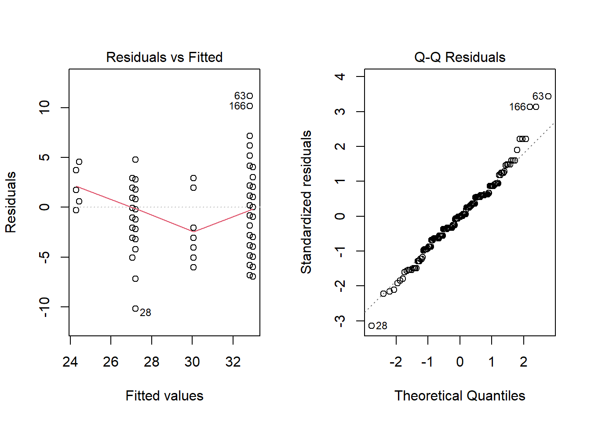

── Attaching core tidyverse packages ──────────────────────── tidyverse 2.0.0 ──
✔ dplyr 1.1.2 ✔ readr 2.1.4
✔ forcats 1.0.0 ✔ stringr 1.5.0
✔ lubridate 1.9.2 ✔ tibble 3.2.1
✔ purrr 1.0.1 ✔ tidyr 1.3.0
── Conflicts ────────────────────────────────────────── tidyverse_conflicts() ──
✖ dplyr::filter() masks stats::filter()
✖ dplyr::lag() masks stats::lag()
ℹ Use the conflicted package (<http://conflicted.r-lib.org/>) to force all conflicts to become errors
library(DescTools)library(MASS)
Attaching package: 'MASS'
The following object is masked from 'package:dplyr':
select
library(car)
Loading required package: carData
Attaching package: 'car'
The following object is masked from 'package:DescTools':
Recode
The following object is masked from 'package:dplyr':
recode
The following object is masked from 'package:purrr':
some
Algorithms 1 Homework 2
Exercise 1: Analysis of Variance
The heartbpchol.csv data set contains continuous cholesterol (Cholesterol) and blood pressure status (BP_Status) (category: High/ Normal/ Optimal) for alive patients.
For the heartbpchol data set, consider a one-way ANOVA model to identify differences between group cholesterol means. The normality assumption is reasonable, so you can proceed without testing normality.
Perform a one-way ANOVA for Cholesterol with BP_Status as the categorical predictor. Comment on statistical significance of BP_Status, the amount of variation described by the model, and whether or not the equal variance assumption can be trusted.
Cholesterol BP_Status
1 221 Optimal
2 188 High
3 292 High
4 319 Normal
5 205 Normal
6 247 High
Is our data balanced?
# it isn't balanced but the tests stay the same for 1-way ANOVAtable(df_hearts$BP_Status)
High Normal Optimal
229 245 67
Assumptions of ANOVA
Variable types:1 quantitative, 1 qualitative
Independence: representative random sample
Normality: We are told in the instructions to trust (normal qqplot looked good)
Equal Variances: We will test with a box plot and3 (passed with Levene
ANOVA Hypothesis
H0:\(\mu_H = \mu_N = \mu_O\)
Halt: @ least 1 not equal.
with Levene’s p-val of 0.8332 we cannot reject Levene’s H0: Equal variance amongst groups
With an ANOVA p-value of .00137, we can reject H0, and accept Halt: At least one group has a different mean.
# The Variance looks pretty equal, Optimal is a little smaller.boxplot(Cholesterol ~ BP_Status, data = df_hearts)
# what does this step do?# we use the anova model before verify assumptions to take advantage of the LT test# this generates anova outputaov.hearts =aov(Cholesterol ~ BP_Status, data = df_hearts)# tests for equal var (use for 1-way ANOVA or 2-way Balanced*** maybe)# p-val = 0.8332 can't reject H0: Equal variance amongst groupsLeveneTest(aov.hearts)
Levene's Test for Homogeneity of Variance (center = median)
Df F value Pr(>F)
group 2 0.1825 0.8332
538
# visually test equal var Larger than 2 way just use visualplot(aov.hearts)
# now we can interpret aov results# with a p-val .00137 we reject H0 and accept Halt: at least 1 group has ***summary(aov.hearts)
Df Sum Sq Mean Sq F value Pr(>F)
BP_Status 2 25211 12605 6.671 0.00137 **
Residuals 538 1016631 1890
---
Signif. codes: 0 '***' 0.001 '**' 0.01 '*' 0.05 '.' 0.1 ' ' 1
Comment on any significantly different cholesterol means as determined by the post-hoc test comparing all pairwise differences. Specifically explain what that tells us about differences in cholesterol levels across blood pressure status groups, like which group has the highest or lowest mean values of Cholesterol.
\(\mu_H > \mu_N\)High > Normal
\(\mu_H > \mu_O\)High > Optimal
The high blood pressure group has a higher average cholesterol than both the normal and optimal group.
For this problem use the bupa.csv data set. Check UCI Machine Learning Repository for more information. The mean corpuscular volume and alkaline phosphates are blood tests thought to be sensitive to liver disorder related to excessive alcohol consumption. We assume that normality and independence assumptions are valid.
categorization of the half-pint equivalents of alcoholic beverages drunk per day:
group 1 :
less than 1 drink.
group 2 :
at least 1 but fewer than 3 drinks.
group 3 :
at least 3 but fewer than 6 drinks.
group 4 :
at least 6 but fewer than 9 drinks.
group 5 :
9 or more drinks.
Perform a one-way ANOVA for mcv as a function of drinkgroup. Comment on significance of the drinkgroup, the amount of variation described by the model, and whether or not the equal variance assumption can be trusted.
with Levene’s p-val of .87 we cannot reject Levene’s H0: Equal variance amongst groups
With an ANOVA p-value of 7.43e-08, we can reject H0, and accept Halt: At least one group has a different mean.
aov.mcv =aov(mcv ~ drinkgroup , data = df_bupa)LeveneTest(aov.mcv)
Levene's Test for Homogeneity of Variance (center = median)
Df F value Pr(>F)
group 4 0.3053 0.8744
340
summary(aov.mcv)
Df Sum Sq Mean Sq F value Pr(>F)
drinkgroup 4 733 183.29 10.26 7.43e-08 ***
Residuals 340 6073 17.86
---
Signif. codes: 0 '***' 0.001 '**' 0.01 '*' 0.05 '.' 0.1 ' ' 1
Perform a one-way ANOVA for alkphos as a function of drinkgroup. Comment on statistical significance of the drinkgroup, the amount of variation described by the model, and whether or not the equal variance assumption can be trusted.
With Levene’s p-val of .52 we cannot reject Levene’s H0: Equal variance amongst groups
With an ANOVA p-val of .00495, we can reject H0 and accept Halt: At least one group has a different mean.
aov.alkphos =aov(alkphos ~ drinkgroup , data = df_bupa)LeveneTest(aov.alkphos)
Levene's Test for Homogeneity of Variance (center = median)
Df F value Pr(>F)
group 4 0.8089 0.5201
340
summary(aov.alkphos)
Df Sum Sq Mean Sq F value Pr(>F)
drinkgroup 4 4946 1236.4 3.792 0.00495 **
Residuals 340 110858 326.1
---
Signif. codes: 0 '***' 0.001 '**' 0.01 '*' 0.05 '.' 0.1 ' ' 1
Post Hoc
Perform post-hoc tests for models in mcv and alkphos.
MCV Post Hoc
\(\mu_4 > \mu_1\) People that drink between 6 and 8 drinks a day have an average MCV of 3.74 higher than people who have less than 1 drink a day.
\(\mu_5 > \mu_1\)
People that drink 9 or more drinks a day have an average MCV of 3.75 higher than people who have less than 1 drink a day.
\(\mu_4 > \mu_2\)
People that drink between 6 and 8 drinks a day have an average MCV of 2.50 higher than people who 1 or 2 drinks per day.
\(\mu_4 > \mu_3\)
People that drink between 6 and 8 drinks a day have an average MCV of 2.81 higher than people who 3 to 5 drinks per day.
\(\mu_5 > \mu_2\) People that drink 9 or more drinks a day have a 15.22 higher average alkaline phosphatase level than people who 1 or 2 drinks per day.
\(\mu_5 > \mu_3\)
People that drink 9 or more drinks a day have a 16.62 higher average alkaline phosphatase level than people who 3 to 5 drinks per day.
Comment on any similarities or differences you observe from their results.
There was never a significant difference in means (in either the MCV or alkphos test) when comparing a group that drank less to a group that drank more. The significant difference always showed a heavier drinking group with a larger mean than the lighter drinkers.
Exercise 3
The psychology department at a hypothetical university has been accused of underpaying female faculty members. The data represent salary (in thousands of dollars) for all 22 professors in the department. This problem is from Maxwell and Delaney (2004).
sex rank salary
1 F Assist 33
2 F Assist 36
3 F Assist 35
4 F Assist 38
5 F Assist 42
6 F Assist 37
7 M Assist 39
8 M Assist 38
9 M Assist 40
10 M Assist 44
11 F Assoc 42
12 F Assoc 40
13 F Assoc 44
14 F Assoc 43
15 M Assoc 43
16 M Assoc 40
17 M Assoc 49
18 M Assoc 47
19 M Assoc 48
20 M Assoc 51
21 M Assoc 48
22 M Assoc 45
Fit a two-way ANOVA model including sex (F, M) and rank (Assistant, Associate) and the interaction term.
# Make ANOVA model# We have an unbalanced data set. so lets set up Sex based off of rank and rank based off of sexaov.psych.sr <-aov(salary ~ sex * rank, data = df_psych)aov.psych.rs <-aov(salary ~ rank * sex, data = df_psych)#Check for Variance with 2-way, just use visualpar(mfrow =c(1,2)) ; plot(aov.psych.sr, c(1,2))
par(mfrow =c(1,2)) ; plot(aov.psych.rs, c(1,2))
#looks good!# These are Type 1 tests sr = sex -> rank. rs is reversesummary(aov.psych.sr)
Df Sum Sq Mean Sq F value Pr(>F)
sex 1 155.15 155.15 17.007 0.000637 ***
rank 1 169.82 169.82 18.616 0.000417 ***
sex:rank 1 0.63 0.63 0.069 0.795101
Residuals 18 164.21 9.12
---
Signif. codes: 0 '***' 0.001 '**' 0.01 '*' 0.05 '.' 0.1 ' ' 1
summary(aov.psych.rs)
Df Sum Sq Mean Sq F value Pr(>F)
rank 1 252.22 252.22 27.647 5.33e-05 ***
sex 1 72.76 72.76 7.975 0.0112 *
rank:sex 1 0.63 0.63 0.069 0.7951
Residuals 18 164.21 9.12
---
Signif. codes: 0 '***' 0.001 '**' 0.01 '*' 0.05 '.' 0.1 ' ' 1
What do the Type 1 and Type 3 sums of squares tell us about significance of effects? Is the interaction between sex and rank significant? Also comment on the variation explained by the model.
I ran the following tests and got the following results:
Type 1 sex * rank
Tells us that there is a significant difference in mean salary based on both rank and sex not off the interaction effect of the two.
Type 1 rank * sex
Tells us the same as above ^^^
Type 3
Tells us that only rank has a significant difference in mean salary.
Variation Explained:
All of the tests above had a high f-value for rank. And both the Type 1 tests had a high f-value for sex. This means that our model explains the variance extremely well in those cases.
Refit the model without the interaction term.
aov.psych.no_interaction_term <-aov(salary ~ sex + rank, data = df_psych)summary(aov.psych.no_interaction_term)
Df Sum Sq Mean Sq F value Pr(>F)
sex 1 155.2 155.15 17.88 0.000454 ***
rank 1 169.8 169.82 19.57 0.000291 ***
Residuals 19 164.8 8.68
---
Signif. codes: 0 '***' 0.001 '**' 0.01 '*' 0.05 '.' 0.1 ' ' 1
Anova(aov.psych.no_interaction_term, type =3)
Anova Table (Type III tests)
Response: salary
Sum Sq Df F value Pr(>F)
(Intercept) 10227.6 1 1178.8469 < 2.2e-16 ***
sex 72.8 1 8.3862 0.0092618 **
rank 169.8 1 19.5743 0.0002912 ***
Residuals 164.8 19
---
Signif. codes: 0 '***' 0.001 '**' 0.01 '*' 0.05 '.' 0.1 ' ' 1
Comment on the significance of effects and variation explained. Report and interpret the Type 1 and Type 3 tests of the main effects. Are the main effects of rank and sex significant?
Type 1
Tells us that there is a significant difference in mean salary based on both rank and sex.
Type 3
Tells us the same as above ^^^
Obtain model diagnostics to validate your Normality assumptions. Choose a final model based on your results from parts (a) and (b). Comment on any significant group differences through the post-hoc test.
# I have already checked for Normality above.# I picked the aov.psych.no_interaction_term as my model because we are primarily concered about the interaction between sex and salary. This is a simpler model because it does not include the interaction effect. Simpler is good.ScheffeTest(aov.psych.no_interaction_term)
type origin cylinders mpg_highway
1 Sedan Asia 4 31
2 Sedan Asia 4 29
3 Sedan Asia 6 28
4 Sedan Asia 6 24
5 Sedan Asia 6 24
6 Sports Asia 6 24
#our data is unbalancedtable(df_cars$cylinders);table(df_cars$origin);table(df_cars$type)
4 6
86 94
Asia USA
104 76
Sedan Sports
164 16
a) Start with a three-way main effects ANOVA and choose the best main effects ANOVA model for mpg_highway as a function of cylinders, origin, and type for the cars in this set. Comment on which terms should be kept in a model for mpg_highway and why based on Type 3 SS.
aov.cars <-aov(mpg_highway ~ cylinders + origin + type,data = df_cars)# check variance# This does not at all look like equal variance amongst groups. However we will continue as if it was because our teacher told us to.par(mfrow =c(1,2)) ; plot(aov.cars, c(1,2))

#based off of the below results, origin is not significant. Lets redefine our model by dropping origin.Anova(aov.cars, type =3)
aov.cars <-aov(mpg_highway ~ cylinders + type,data = df_cars)#this still does not look like equal variance to me.par(mfrow =c(1,2)) ; plot(aov.cars, c(1,2))
summary(aov.cars)
Df Sum Sq Mean Sq F value Pr(>F)
cylinders 1 1470.8 1470.8 138.22 < 2e-16 ***
type 1 115.8 115.8 10.88 0.00117 **
Residuals 177 1883.5 10.6
---
Signif. codes: 0 '***' 0.001 '**' 0.01 '*' 0.05 '.' 0.1 ' ' 1
For the model with just predictors you decided to keep, comment on the significant effects in the model and comment on how much variation in highway fuel efficiency the model describes.
Both the number of cylinders and type of car have a significant effect on highway fuel efficiency. With high F values (and low p-values) in both cylinders and type categories, we can say with certainty that our model explains a great deal of the variance in highway fuel efficiency.
b) Starting with main effects chosen in part (a), find your best ANOVA model by adding in any additional interaction terms that will significantly improve the model. For your final model, comment on the significant effects and variation explained by the model.
My final model will be aov.cars_tc. The interaction effect, now that origin is dropped, is significant. It is worth including along with the main effects.
# lets try building another model that has an interaction term but still leaves out origin.aov.cars_ct <-aov(mpg_highway ~ cylinders * type,data = df_cars)aov.cars_tc <-aov(mpg_highway ~ cylinders * type,data = df_cars)#both type 1s and the type 3 test all show significant for both of our main effects and our interaction effect. Awesome!summary(aov.cars_ct)
Df Sum Sq Mean Sq F value Pr(>F)
cylinders 1 1470.8 1470.8 143.839 < 2e-16 ***
type 1 115.8 115.8 11.323 0.00094 ***
cylinders:type 1 83.9 83.9 8.201 0.00470 **
Residuals 176 1799.6 10.2
---
Signif. codes: 0 '***' 0.001 '**' 0.01 '*' 0.05 '.' 0.1 ' ' 1
summary(aov.cars_tc)
Df Sum Sq Mean Sq F value Pr(>F)
cylinders 1 1470.8 1470.8 143.839 < 2e-16 ***
type 1 115.8 115.8 11.323 0.00094 ***
cylinders:type 1 83.9 83.9 8.201 0.00470 **
Residuals 176 1799.6 10.2
---
Signif. codes: 0 '***' 0.001 '**' 0.01 '*' 0.05 '.' 0.1 ' ' 1
c) Comment on any significant group differences through the post-hoc test. What does this tell us about fuel efficiency differences across cylinders, origin, or type groups?